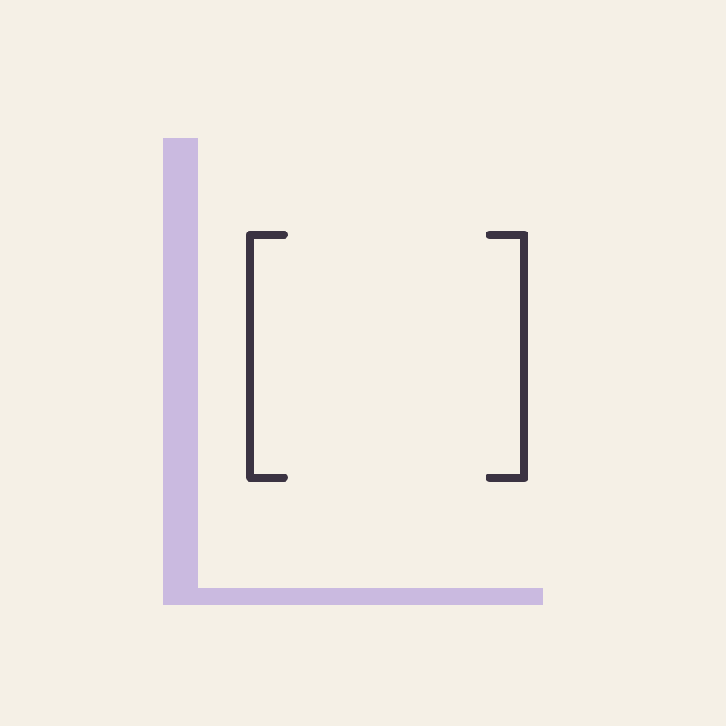
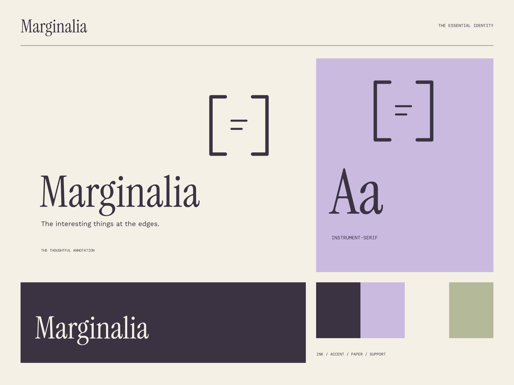

01
Notice what others pass
Thoughtful research that starts with a closer look.
RESEARCH / WRITING / POINTS OF VIEW
The interesting things at the edges. A little closer to the interesting parts.

A coherent little world
A little closer to the interesting parts. The interesting things at the edges.
01
Thoughtful research that starts with a closer look.
02
Writing that gives an interesting idea a clear place to live.
03
A practice that values the question as much as the conclusion.

The point of view
Hand-annotated page objects, expressive bracket geometry, faint writing rules, and large literary serifs. The margins become a purposeful second voice.